Проминули вже гіркі часи зривання хрестів і руйнування святинь. Знову споруджуються нові святині й каплиці, прикрашені хрестами, розвиваються ті, що вистояли. Справді настали часи Воздвижения Святого Хреста.
Ця книга описує ЗО років існування Римсько-Католицької парафії Воздвижения Святого Хреста в Святошині на околиці Києва, і є однією з тих книг, які розпочинають опис діянь Церкви Київсько-Житомирської дієцезії, діянь, мало кому відомих до цього часу.
Священики й віруючі, імена яких ми зустрічаємо на сторінках цієї книги, були тими особистостями, котрими Боже Провидіння послуговувалося для підтримування віри в страшні роки загальної атеїзації й знищення церков. Цими священиками, повними енергії, запалу, були кс. Теофіл Скальський, кс. Казимир Наскренський та багато інших.
Віра цілком не згасла дякуючи саме цим священикам, які ще до революції глибоко засіяли зерно віри до сердець і душ віруючих за допомогою систематичного навчання істин віри через проповідь, катехізацію, і завдяки малим спільнотам, таким як Братство Живої Вервиці, Братство Св. Скапулярію, Терціяріїв, Содаліцію Пресвятої Богородиці, а також Почесній Варті (Straz Honorowa).
Ці спільноти можна було ще зустріти в 70-х роках, коли я приїхав для душпастирської праці на теренах України. Велику увагу ці священики звертали також на виховання в родинах, а також на благодійність.
Після революції 1917 року люди намагалися врятувати те, що вціліло після приходу до влади більшовиків, а роки перед Другою Світовою війною стали часами тоталітарного знищення Церкви.
Трохи сприятливіші були роки післявоєнні, коли приїхало декілька священиків з Луцької дієцезії, котрі, пройшовши через в'язниці й гулаговські табори, повернулися до Житомирської й Кам'янець-Подільської дієцезій, щоб служити решті віруючих, яка витримала випробовування.
До Киева ці священики приїздили лише час від часу, і тому по неділях і святах парафіяни змушені були їхати до Житомира, Бердичева й Михайлівни.
Піднесення релігійного життя спільноти в Святошині припадає на час служіння священика прелата Тадеуша Хоппе, салезіянина з Литви, котрий зараз працює в Одесі.
Можна сказати, що парафія дійсно розпочала своє життя з Богом тільки після аварії па Чорнобильській атомній станції, коли власті, що переслідували священика, самі запропонували, аби він залишився тут і щодня служив Служби Божі. Його Еміненція ксьондз Кардинал Юльянс Вайводс призначив настоятелем цієї парафії священика Яна Крапанса, котрий опікувався нею аж до 14 лютого 1991 року, коли опіку над парафією взяли на себе Отці Кармеліти Босі.
Завданням сьогоднішніх душпастирів цієї парафії є використання всіх можливих душпастирських засобів, свого душпастирського запалу й монашої побожності, щоб віруючі добре приготувалися до третього тисячоліття. Нехай їм у цьому допомагає Покров Божої Матері і молитви святих покровителів Кармелітанського Ордену.
Немає такого місця, де б Господь не був присутній...
Для того, хто Його шукає, Він навіть ближчий,
ніж власне серце.
Нікола Кавасила, XIV ст.
Увесь християнський світ наближається до Великого Ювілею 2000-го року. Ця урочистість для Вселенської Церкви загалом і для маленької спільноти зокрема є великою датою, котра стає нагодою з погляду 2-х тисячоліть оглянути весь пройдений шлях, використати цей час для навернення й покути, для відновлення зв'язку з Богом, Його благодаттю і надприродним життям, яке єдине може заспокоїти найглибші прагнення людського серця.
Щоб успішно виконати це завдання, християни мають знаходитися в єдності з Богом і так само в єдності розвивати спільнотне життя. Це є також можливістю для Церкви, котра проповідує Христа, справжнього Бога й досконалу людину, відкрити перед кожною особистістю перспективу особистого духовного розвитку. Такий шлях внутрішнього визволення, що відчиняється на іншого, робить людину особистістю любові.
Ця книжечка розповість вам про одну з католицьких парафій Києва, що в Святошині - Костел Воздвижения Святого Хреста (повна назва: Римсько-Католицька парафія в Ленінградському районі м. Києва). Це є невеликий нарис про велику історію християнства і короткий - 30-річний - період життя парафії.
Для християн України, які зберегли віру за часів войовничого атеїзму іі комунізму, цей період був часом тяжкої боротьби за життя з Богом.
Для вірних увесь 1999 рік, який оголошений Церквою роком Бога-Отця, є власне “Роком благодаті” і “Роком любові”, коли людина може прийняти Добру Новину й передати її нащадкам. Благодать приходить до нас у такій природній формі, що існує в Церкві майже 2000 років, як життя і віра свідків Живого Бога, котрі на цих теренах вели важку й постійну боротьбу за життя у вірі, тобто, власне, за життя Церкви. Через них Господь показав справу Свого Милосердя, показав перемогу добра над злом.
Починаючи складати цю книжку, ми мали на меті поділитися тими духовними скарбами та переживаннями, що їх Господь у своїй превеликій любові і бажанні досконалого життя дає кожній людині.
Маємо надію, що історія нашого костелу допоможе всім нам краще зрозуміти таємницю Божого діяння, стане тією іскрою, котра запалить вогник любові, миру, радості в людських душах.
Нехай Господь Ісус Христос і Пресвята Богородиця благословляють і наповняють вірних Святим Духом, Духом любові, миру, правди, мудрості та сили! Нехай це багатство, понад усяке інше, буде з нами навіки.
Автори
До поділу Церкви християнство поширювалось на Київську Русь двома напрямками. Одним напрямком - з півдня, з Візантії - поширювався обряд Східний; другим - з заходу і півночі, зі Святої Римської Імперії та Скандінавії - обряд Західний.
Одним із свідчень існування в Київській Русі Західного обряду є те, що княгиня Ольга в 959 році просила цезаря Оттона І про єпископів і місіонерів для свого краю. Першим київським єпископом був призначений Лібутій з Могунтського монастиря св. Албана в 960 р., але він не побачив своєї столиці, бо помер у 961 р. Другий єпископ, св. Альберт з Тревірського монастиря, лише встиг прибути до своєї пастви у 961 р., як повернувся князь Святослав, котрий вигнав християн з Києва. Тільки по його смерті, під час князювання його сина Ярополка, до Києва близько 979 р. прибув архієпископ Русі св. Боніфацій. Пощастило йому навернути самого князя, але незабаром, біля 979 року, повернувся до краю, вигнаний перед тим Ярополком, його брат Володимир, котрий звелів скарати св. Боніфація. Кілька років потому, в 988 р., сам князь Володимир прийняв святе Хрещення і відтоді ревно поширював християнство на Русі.
І хоча прийняття Володимиром християнства з рук духовенства східного обряду стало видимим поштовхом до його зміцнення, розвиток західного обряду не припинився. Призначалися єпископи, розбудовувалися костели та монастирі, до столиці Київської Русі неодноразово прибували дипломатичні місії Пап та західних католицьких монархів.
Для Київської Русі, власне для Києва, призначалися католицькі єпископи в 961, 979, 1021, 1241 рр., але термін перебування їх у місті був короткочасним.
Перші відомості про функціонування у Києві костелу відносяться до першої половини XIII ст. Існує версія і щодо спорудження костелу раніше, близько 1159 р. німецько-католицькою торговою колонією, котра підтримувала зв'язки з віденським бенедиктинським монастирем. У XIII ст. поблизу костелу містився монастирський осередок, можливо, зі школою. Опіку над католицькою громадою прийняли тоді домініканці (католицька традиція подає легенду щодо перебування у Києві одного з перших польських доміканських місіонерів Яцека Одровонжа - св. Іокінфа від 1594 р.).
Перший католицький храм Пріснодіви Марії проіснував до 1240 р. Надалі місіонерські орденські депутації ще кілька разів відвідували Київ, можливо, підживлюючи життя католицької громади. Серед різноголосиць свідчень маємо дійти висновку, що новий монастир домініканців виник у Києві на поч. XV ст. (ймовірно 1433 р.). Монастир, який розмістився на Подолі, мав тоді княжі привілеї на збір мита і деякі земельні володіння, згодом дуже розширені. Тоді ж було споруджено дерев'яний костел, він був одночасно і монастирським, і парафіяльним, і кафедральним. Зазначимо, що в історії київського католицького єпископства найчастіше єпископський сан отримували представники домініканського ордену, щоправда, до 90-х рр. XVI ст. єпископи в Києві практично не проживали. Відтак костел, що існував у ХУ-ХУІ ст., визнається переважно як домініканський св. Трійці, при храмі зазвичай служило 2-3 ченці. Існує схематичне зображення храму - будова з високим дахом, дзвіницею, високим фронтоном... Костел не раз горів, перебудовувався, зрештою в XVII ст. був перевезений на лівий берег Дніпра, тому можна припустити, що костел мав бути зрубним, тобто мав "збірно-розбірну" конструкцію.
Середньовічний воєводський замок виник на поч. XV ст. на одній із старокиївських гір. Ним, власне, була територія, де розміщувались урядові установи і помешкання, арсенал, садиби з церквами трьох київських монастирів. Прямих свідчень про існування в Замку католицького костелу ми не маємо (уточнюючи свідчення польської люстрації 1552р.), але можемо вказати вірогідні періоди, коли в Замку мали існувати католицькі установи: 1420-1482 рр. (в 1470-х у Замку мешкав католицький єпископ). Відомо достовірно, що католицька каплиця існувала в XVI ст. - в 1590-х роках (вірогідно, до 1608 р.), і, насамкінець, перед остаточним зруйнуванням Замку в 40-х роках XVII ст. воєвода Ян Тишкевич заборонив поновлювати замкові церкви і наказав будувати костел. Відоме зображення Замкової гори першої половини XVII ст. включає дві споруди, увінчані хрестами, конфесійна належність котрих неясна.
Середньовічний Київ складався з трьох частин - Подолу, Верхнього чи Старого міста і Печерська. Київський Поділ швидко забудовувався: опановувалися нові болотисті, цілинні ділянки, нетривкі доти звивисті вулиці все щільніше обсаджувалися садибами, будувалися й поновлювалися церкви. "Жителі торгової частини Подолу з метою обмеження зростання земельних володінь у місті київської католицької єпископії - Біскупщини, відділилися від неї розмежувальним ровом, згодом рів став каналом, а його обіччя - Верхнім і Нижнім валами (існуючі вулиці з відповідними назвами вказують, однак, лише приблизний напрямок біскупської межі). Відтак, Поділ був розділений на біскупський з єпископським палацом і кафедральним костелом, і міщанський Поділ (де знаходилися домініканський, бернардинський та ієзуїтський костели).
Ідея створення біскупщини належала єпископу Й. Верещинському, але його наступник X. Казимирський подав Польскому королю скаргу, від чого королівським 1602 р. указом до єпископів відійшли гора Щекавиця і територія на Житньому торзі, від нього Біскупська вулиця вела до Йорданських воріт, Йорданського озера; біскупу належали заливні луки оболонії, власне територія від Щекавиці до Дніпра. Окрім того, київські біскупи володіли хуторами і землями на берегах Дніпра, Десни, Росі, Прип'яті, Унави, Стугни, містом Фастів - резиденцією біскупа. Попри великі володіння і відтак значні доходи, будівництво кафедрального костелу в Києві було досить проблематичним. Новий кам'яний костел було закладено за єпископа X. Казимирського (1599- 1618).
За П. Алепським, архідияконом Антиохійського патріарха Макарія, котрий відвідав Київ у 1653 році, у католиків у місті були "дві великі кам'яні церкви..., одна стара, друга - нова і чудово прикрашена".
Кафедральний храм будувався в 1604-20 рр., а домініканський костел був пишно перебудований після 1638 р., й існуючі панорамні зображення міста переконують, що саме він був "чудово прикрашеним".
Життя домініканського монастиря значно пожвавлюється від кінця XVI ст. Це час канонізації Яцека Одровонжа, діяльність якого, як вже зазначалось, пов'язувалося з Києвом. Паломництво до нових святих місць, численні пожертви шляхти, яка швидко збагачується, підтримка влади (від 1608 р. київськими воєводами призначалися виключно католики), - все це стимулювало розбудову монастиря. Королівські привілеї підтверджували й розширювали права і володіння домініканців. На території міщанського Подолу вони мали чимало садиб, дарованих ділянок, шинків, навіть друкарню та цегляний завод. Поза Києвом їм належали землі від Дніпра і Вишгорода до Гостомиля, села Яцеківка, Пріорка, Мостище, Берковець, Борщагівка, Совки... Доміканці мали багатьох прихильників у місті, і коли 1638 р. трапилася пожежа на Житньому торзі, від якої, ймовірно, потерпів і домініканський храм, то 1640 р. за допомогою меценатства родини Аксаків костел було перебудовано.
За розмірами цей храм був одним з найбільших тодішніх костелів у Київській та Луцькій дієцезіях і, маємо думати, одним із самих пишних. За описами Алепського, інтер'єр прикрашали розписи на склепіннях, гіпсові оздоби. Після козацьких воєн, у другій половині XVII ст., домініканський костел залишався порожнім, а в 90-х роках був освячений на Церкву Петра й Павла. У 1930-х роках храм було зруйновано. Він знаходився на вул. Миколи Притиска навпроти Флорівського монастиря.
Свідчення про бернардинський київський костел дуже незначні. Відомо, що монастир і костел були дерев'яними, монастир знаходився неподалік від Дніпра поблизу церков Покрови та Миколи Доброго, мав привілей на збір мита з рибного торгу. Дата заснування монастиря і будівництва костелу невідома (можливо, 1628 р.). Пожежа 1651 року вщент знищила вже до того пошкоджені будови, і відтоді бернардинці залишили місто.
Створена в 40-х роках XVII ст. ієзуїтська колегія (їй передувало перебування в Києві ієзуїтів у 20-30-х роках XVII сторіччя). У 1637 р. воєвода Ян Тишкевич запросив до Києва як місіонерів фастівських ієзуїтів (саме на той час київським єпископом став ієзуїт О. Соколовський). До міста прибуло тоді лише двоє ченців, а згодом за підтримкою шляхти у місті відкрилась ієзуїтська колегія. Відомо, що спочатку ієзуїти служили у домініканському та бернардинському костелах, але вже у 1646 р., за свідченням Г. Л. де Боплана, на Подолі існував ієзуїтський храм ("між Дніпром і бернадинами").
Ймовірно, що костел існував, адже він був обов'язковий у структурі колегії, і поза тим переконливо засвідчений у приписі Богдана Хмельницького 1649 р. щодо Києва: "Римсько-Католицькі костели мають залишатися в цілості, виключаючи церкву ієзуїтів, які були причиною всіх заворушень".
Після царського указу 1660 р. про виселення з Києва всіх поляків, католицьких костелів у місті не було до 1799 р. Після розподілу Польщі в 1667 р. до Києва було приєднано правобережне довкілля, внаслідок чого Київ став столицею губернаторства, населеного польським дворянством, яке швидко домоглося дозволу на будівництво костелу.
Новий костел, започаткований за царським приписом, найскромніших розмірів і вигляду, позбавлений виразних архітектурних рис, знаходився на Печерську. Цей дерев'яний костел з традиційною посвятою св. Миколаю проіснував до 1817 року і перебував під опікою домініканців.
Надалі будівництво костелів підноситься до рівня справи державного значення, бо наступні два костели мали посвяту святим покровителям правлячих самодержців: на честь перемог і в пам'ять відвідин міста. У 1814 р. київська католицька громада починає клопотання про будівництво нового кам'яного костелу. Місце споруди добиралося за царською вимогою якнайкраще. Саме тоді було закладено костел св. Олександра, який посідає одну з найвищих точок старокиївських гір.
У 1897 p., згідно з дозволом царя Миколи II, почалося проектування нового іменного костелу св. Миколая, виконане В. Городецьким.
Від середини XIX ст. до початку 1-ї світової війни численна польська громада утримувала в місті низку католицьких каплиць. У власних помешканнях меценатів, у притулках, богадільнях, шпиталях, у гімназіях, в інституті шляхтанок, кадетському корпусі, університеті, на цвинтарі.
Одна з таких каплиць на честь Ігнатія Лойоли запам'яталась навіть як "костелок" (кс. Т. Скальський), але інший очевидець, архітектор К. Іваницький, відносить її до каплиць. Це була перебудована споруда товарного складу на Шулявці, розміром 6x7 метрів із сигнатурою й хрестом над входом.
Окрім каплиць, напередодні 1-ї світової війни, був отриманий дозвіл на будівництво і навіть розроблений проект рівного каплицям по камерності, але все ж вирішеного як храм, костелу в Пущі-Водиці. Поза тим, у 1913 р. на Подолі коштом Кароліни Ярошинської був закладений костел св. Йосипа (Юзефа). Будівництво було зупинено війною, коли в споруді вже був виведений гранітний цоколь.
До сучасної території Києва належить і район Дарниці, який ще на початку сторіччя входив (як Лівобережжя) до складу Могильовської дієцезії (вона сягала від Петербурга до Дніпра). Кс. Т. Скальський згадує католицьку каплицю в Дарниці, посвята та місцезнаходження котрої невідомі.
Близько 1937 року Олександрівський і Миколаївський костели втрачають офіційний статус храму до початку 90-х років. Як відомо, в Олександрівському костелі розташовувався гуртожиток, згодом бібліотека і планетарій, а в Миколаївському - архів і, після реставрації, Будинок органної музики (орган було встановлено вже в 70-х роках).
За часів Радянського Союзу Католицька Церква переслідувалась і винищувалась з особливою рішучістю. Всі організаційні структури Церкви ліквідувалися. Єпархіальних священиків та ченців було катовано, ув'язнено або вивезено до таборів як представників “ ватиканського імперіалізму” і ворогів комуністичної системи та робітничого класу.
Та все ж посеред тотального атеїзму залишилися люди, вірні до кінця Ісусу Христу, котрі не відійшли, не зламалися, заплатили за все сповна, ставши наслідувачами Апостола Петра, - каменем, на якому Господь заклав у трудні повоєнні роки першу католицьку парафію - Воздвижения Святого Хреста в Києві.
Костел на околиці Святошина є символом вірності Ісусу Христу і Церкві. Більшості тих людей (поляків - вірних католиків) уже немає посеред нас. Вони предстали перед Тим, Кому віддали свої сили, присвятили життя, нехтуючи тлінними благами цього світу.
І лише після славетного посвячення Іваном Павлом II 7 червня 1981 р. і 25 березня 1984 р. у Римі всього світу і Росії Непорочному Серцю Марії, розпочався поступовий занепад комунізму і настала релігійна весна. Віруючий люд отримав право на повернення державою відібраних у нього святинь. Нечисленні священики, котрі до цього діяли у підпіллі, розпочали акцію з вимогами повернення костелів віруючим.
Сьогодні можемо сказати, що перемога прийшла перш за все через серця і старання вірних, котрі вірили в допомогу Господа. Якби не було їхньої віри, що не підкорилася негараздам, мукам і переслідуванням, їхньої героїчної надії, то не було б і теперішньої спільноти. Господь нам всім допоміг, і за те мусимо віддати Йому честь та служити Ісусу Христу і Церкві. Тепер всі разом молимося, творимо скромні справи, а Господь Бог благословляє, схиляється в своїй неосяжній любові над нашою недосконалістю.
Вважається, що назва Святошин походить від імені чернігівського князя Святослава (у чернецтві - Микола Святоша). Згідно з літописом, Святоша володів землями Борщагівки, що прилягали до лісового масиву. А в письмових джерелах ця назва вперше згадується в 1619 році. У грамоті польського короля Сигізмунда III значиться, що межа земель, якими мають право користуватися київські міщани, проходить “через дубраву до боку святошинського”.
Місцевість ця була для Києва далекою околицею навіть наприкінці XIX століття, коли Святошин починають освоювати як кліматичний курорт. Чимало відомих лікарів відзначало цілющі властивості святошинських лісів. Уславлений терапевт Ф. Г. Яновський радив хворим на легені поселятися ліворуч від колишнього Святошинського шосе, де переважали сосни, а тим, у кого недуги серця - праворуч.
1952 - 3 січня вул. Матківщина перейменована на вул. Шепетівська.
1955 - 5 жовтня вул. Пушкінська (с. Святошин) перейменована на вул. Львівську (Ленінградський район).
1961 - 8 серпня почали забудовувати вулицю Шепетівську.
Костел Воздвиження Святого Хреста належить до Київсько-Житомирської дієцезії, котра має свою окрему славну історію. Скажемо, однак, про неї декілька слів.
Витоки Київської дієцезії не є знаними достовірно. Існує документ про неї, датований 28.08.1412 р. Юридичний статус дієцезії уклав Владислав Ягелло ймовірно перед 1405 роком, він же збудував кафедральний костел св. Івана Хрестителя. Як відомо з інших писемних джерел, єпископство виникло в 1321 р. як Київська дієцезія з першим єпископом Генриком. Обіймала вона територію теперішньої східної та південної України, включаючи Чорне море й частину Білорусії та Росії.
У 1797 р. Нунцій єпископ Лаврентій Літте зробив канонічний поділ Київської дієцезії, внаслідок якого виникла нова Луцько-Житомирська дієцезія. Припинення діяльності Київської дієцезії відбулося згідно з декретом єпископа Л. Літте 08.08.1798 р., через три роки після відповідного Указу (від 27.09.1795) Катерини II.
50 років потому, в 1848 році, після нового поділу дієцезій у Російській імперії, що його виконав єпископ Головинський згідно з буллою Папи Пія IX, парафії, що знаходилися у Київській губернії, знову об'єдналися й увійшли до складу Луцько-Житомирської дієцезії.
У 1720 р. єпископ Самуїл Ожга переніс до Житомира Київську капітулу. У той час з його ініціативи було розпочато будівництво кафедрального храму св. Софії.
У 1762 р. в Житомирі була відкрита семінарія. Згідно з рішенням царя, в 1844 р. єпископ Михаїл І Пивницький переніс з Луцька до Житомира свою резиденцію і консисторію та збудував єпископський будинок.
У 1925 р. Житомирська дієцезія була знову від'єднана від Луцької.
Майже 65 років, до 1990 року, на землях дієцезії тривали переслідування церкви й віруючих.
16 січня 1991 р. Папа Іван Павло II відновив католицьку ієрархію в Україні. Єпископом Ординарієм Житомирської дієцезії був призначений кс. Ян Пурвінський.
6 січня 1995 року в Ватикані був консекрований Святішим Отцем Іваном Павлом II єпископ помічник Станіслав Широкорадюк, перший в єпархії єпископ - українець.
У січні 1999 року Житомирська дієцезія була перейменована в Київсько-Житомирську.
Час гортає сторінки нашого життя, залишаючи нащадкам на спомин події, факти, імена людей та їхні справи.
Пройшло майже 2000 років від Різдва Христового, Християнська Церква готується перейти рубіж третього тисячоліття. Римсько-Католицька парафія при костелі Воздвижения Святого Хреста в Святошині готується до свого тридцятиріччя - маленька й молоденька гілочка великого зеленого дерева Церкви, котра сповідує християнство - віру у життя вічне.
Так сталося, що нечисленна спільнота людей, котрі міцно вірили Господу Ісусу Христу, втрималася, вистояла, зберегла і передала свою віру нащадкам, які понесуть її далі складними стежками історії. Часи завжди тяжкі. Але зовнішні перешкоди лише гартують, не заважаючи внутрішній невидимій роботі - зростанню духовності і віри. Господь ніколи не лишає свою паству без допомоги, навіть коли про те волають одиниці.
Конспірація, або "поляки чудують"
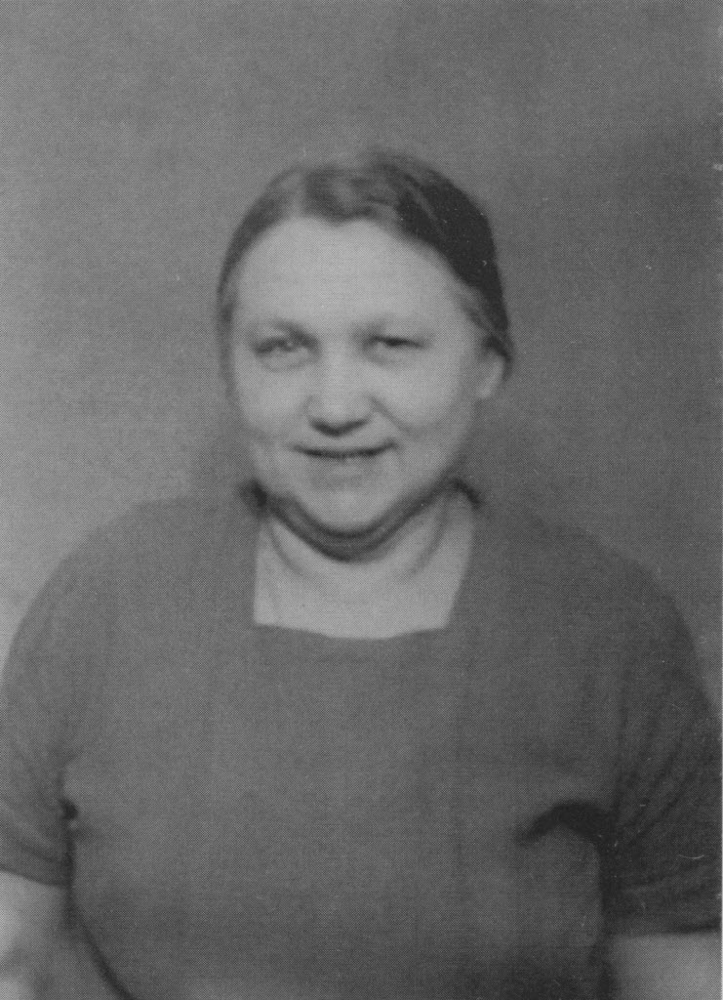 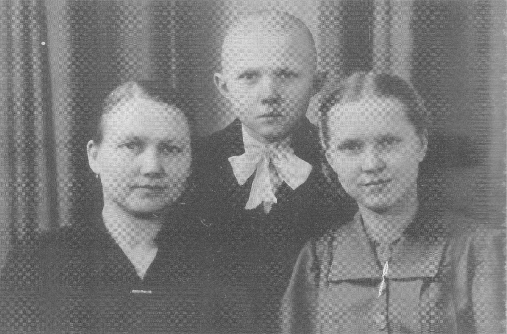 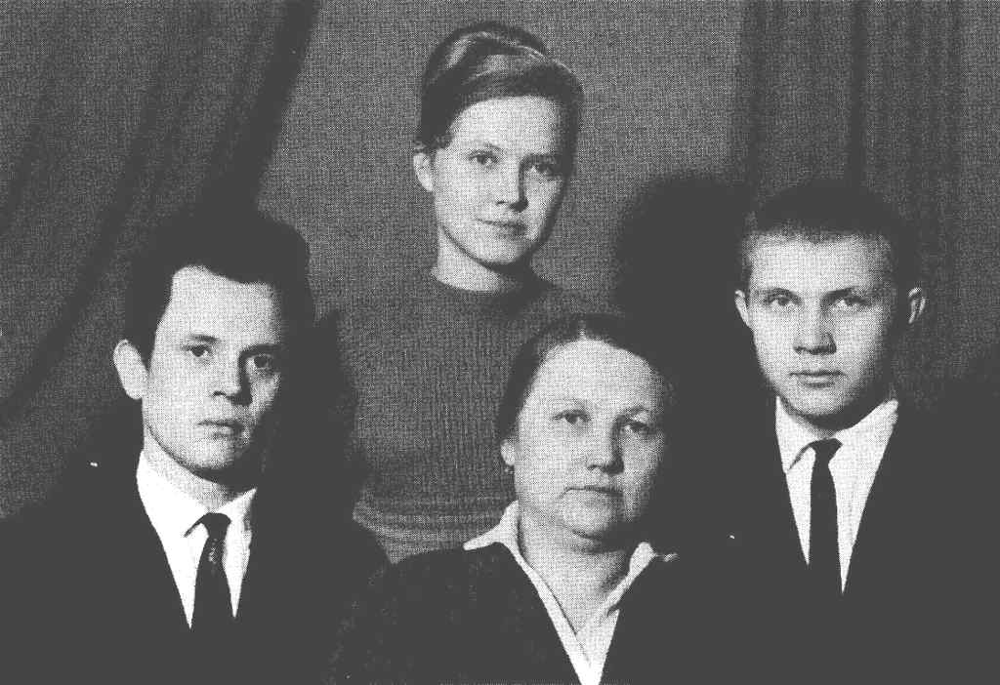Після війни у нас ще існувала можливість збиратися на Месу в приватному будинку на вулиці Львівській у Святошині.
У 1957 році у поляків було забрано і цей Божий дім, останній центр католицької духовності, що був одночасно також і останнім осередком польської мови та культури. Що ми пережили може зрозуміти лише той, хто переніс подібне. Осиротілі, позбавлені того, що було дорогим для нас, пригнічені, ми терпіли кожний в себе вдома. Хто міг собі це дозволити - їздив до костелу в Житомирі, в кого такої можливості не було - вибирався туди лише на великі свята.
З часом до Києва стали приїжджати священики. Найчастіше приїжджав кс. Мірецький, котрий, не маючи своєї парафії, переїжджав з місця на місце, служив там, де виникала можливість. Кс. Кашуба, коли їхав з Волині до Казахстану, то також заїжджав до Києва. Месу служили в приватних помешканнях, тут же сповідали, хрестили й вінчали. В той час ми жили в страху, боячись міліції, сусідів, щільніше закривали вікна, щоб ніхто не побачив, що ми робимо. Кожний, хто був учасником такої Меси, починаючи зі священика і закінчуючи господарем помешкання, міг бути висланим до Сибіру без суду і слідства впродовж 24 годин. Та з часом ми посміливішали так, що під час Служби Божої навіть почали співати. Сусідам говорили тоді, що у когось день народження або якась інша урочистість. У такому разі зазвичай в кімнаті стояв приготований до обіду стіл. На такі "підпільні" Богослужіння ми збиралися, зокрема, у квартирах Житкевичів, Любомирських, Нечаєвих, Маросюків, Курочки і в наших. Господь так нас об'єднав, що з цієї розпорошеної парафії виокремився гурт людей, котрі поставили перед собою досить сміливе завдання - поляки повинні знову мати свій Храм. Воістину відчайдушні люди й відчайдушна ідея!
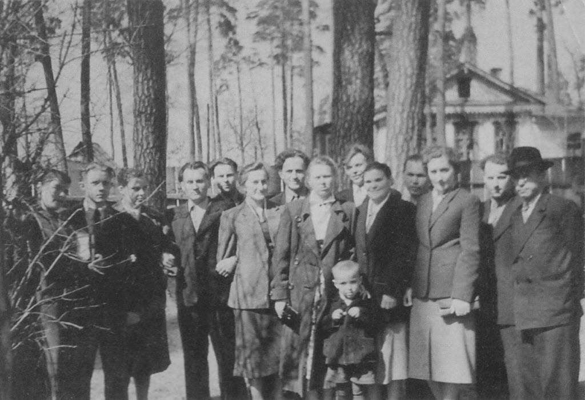 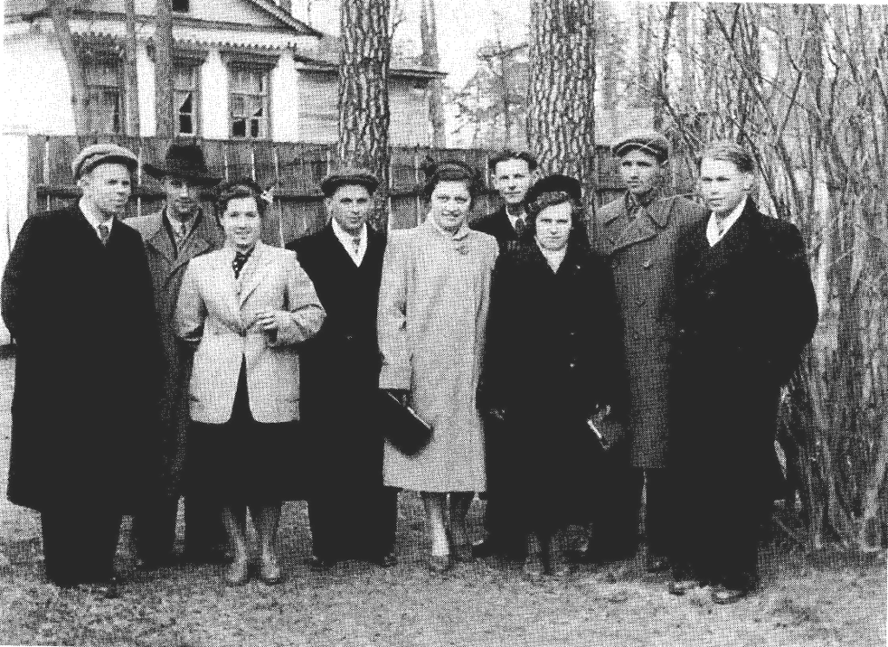 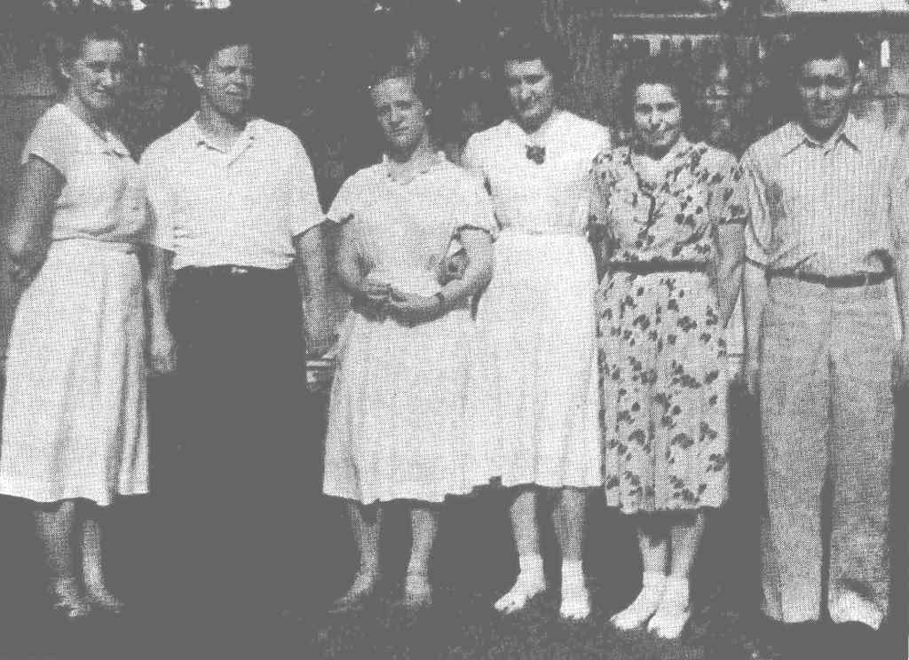 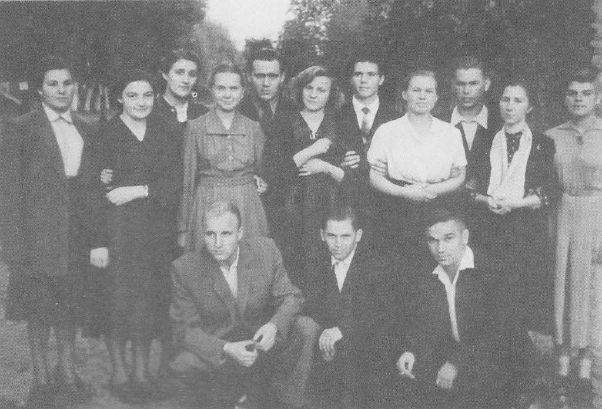І все-таки ми розпочали
Нашим головним натхненником був уже тепер покійний Валентин Житкевич, людина глибоко віддана Ісусу Христу, сповнена надії й глибокої віри в те, що ми переможемо. У той період до нас стали приїжджати священики з Польщі, Прибалтики. Що то були за люди - кс. Тадеуш Собкович, Міхал Хук, Юзеф Піетушко!
Один із них, греко-католицький священик з Вільнюса, Володимир Прокопів, відіграв величезну роль в історії відродження нашої парафії. Він родом з Волині. Скінчив семінарію в Римі, володів кількома європейськими мовами. Якось навіть комуністична влада запропонувала йому кафедру в Київському університеті за єдиної умови, що він відречеться від Бога. Коли ж отець Володимир відмовився прийняти цю "благодать", то його заслали кудись до колгоспу під Вільнюс конати рови та канави.
Отець Володимир, приїхавши до Києва, відразу ж приєднався до нашої боротьби. Допомогав нам писати заяви й листи в різні органи влади, радив. Переслідування настільки загартували його, що він міг диктувати цілими ночами, забуваючи, що вранці мені треба було йти до праці. Листи, котрі ми писали спільно з ним, були сміливими й правдивими, і голова нашої спільноти Валентин Житкевич, часте нько "пом'якшував" їх, що не раз було причиною "маленьких штормів".
Допомагали нам порадами ксьондзи Дажицький та Хоміцький. 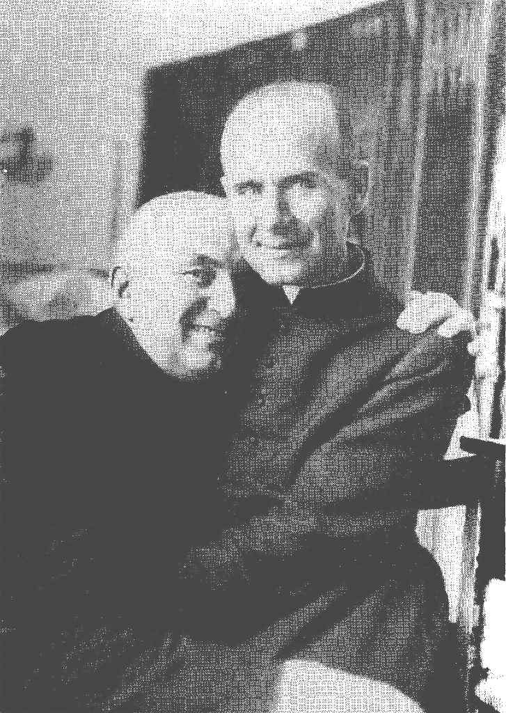Наші листи ми носили в усі державні установи і Києва, і білокам'яної столиці Москви, так що здавалося, до них протоптані вже не стежинки, а шляхи. Не раз нас виставляли за двері, а скільки образливих слів нам довелося вислуховувати. Нарешті ми комусь так набридли, що нам сказали: костел повернути нам не можуть, але ми можемо купити чи орендувати приміщення для "Молитовного будинку", але не в центрі, а на околиці Києва. З цим дозволом ми довго шукали відповідного місця і нарешті таки знайшли - це був самий крайній будинок на одній з вулиць околиці міста, за ним відразу ж починалось село.
Одразу ж виникло чимало проблем: звідки взяти гроші? На кого оформити цей будинок? Чи можна бути впевненими в тому, що потім його ніхто в нас не відбере? Ціна будинку була досить значна - 16 тисяч карбованців, в ті часи то були дуже великі гроші! І звідки нам їх було дістати? Спочатку ми вирішили звернутися до тих священиків, котрі мали парафії, але одним гроші самим були потрібні, аби відбудовувати костели, а інші просто боялися, що ми не зможемо повернути борг. Після такої невдачі ми вирішили звернутися до тих священиків, які не мали парафій і служили підпільно. І цей шлях виявився більш вдалим. Більшу частину грошей нам дав отець Сидоренко, знаєте, він навіть не спитав, коли ми їх повернемо. Ми дуже довго повертали цей борг, але все ж віддали. А другу частину, котрої не вистачало, ми зібрали самі.
Гроші знайшлися, але проблем не поменшало
Тепер нам необхідно було оформити цей будинок на когось, але для цього потрібна була людина, котра не мала б власного житла, але мала київську прописку. Подумайте, що то є за абсурд! Але й тут нам допомогло Боже провидіння. Начебто з неба нам була зіслана Ельжбета Верещинська, котра була прописана в дочки в Києві, але місця для неї в квартирі дочки не знайшлося. Пані Ельжбета й стала господинею нашого костелу. А костел мав 4 кімнати і дерев'яну веранду, де стояла газова плита. Не було ніякого опалення, кухні, туалету, сходів на другий поверх.
Перші "Меси", чи єретики
2 травня 1969 року в нашому храмі відбулося перше Богослужіння. А потому, приблизно через рік, у нас побував кс. Тадеуш Собкович, який освятив наш костел. 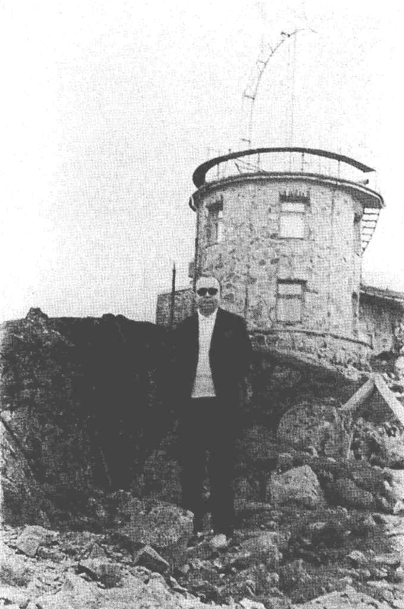Люди приносили сюди все, що в кого було, в багатьох збереглися речі ще з каплиці на вулиці Львівській. Знайшовся також літургійний одяг, чаші, інші предмети культу. Ми всюди посилали звістки, що поляки Києва знову мають свій костел. 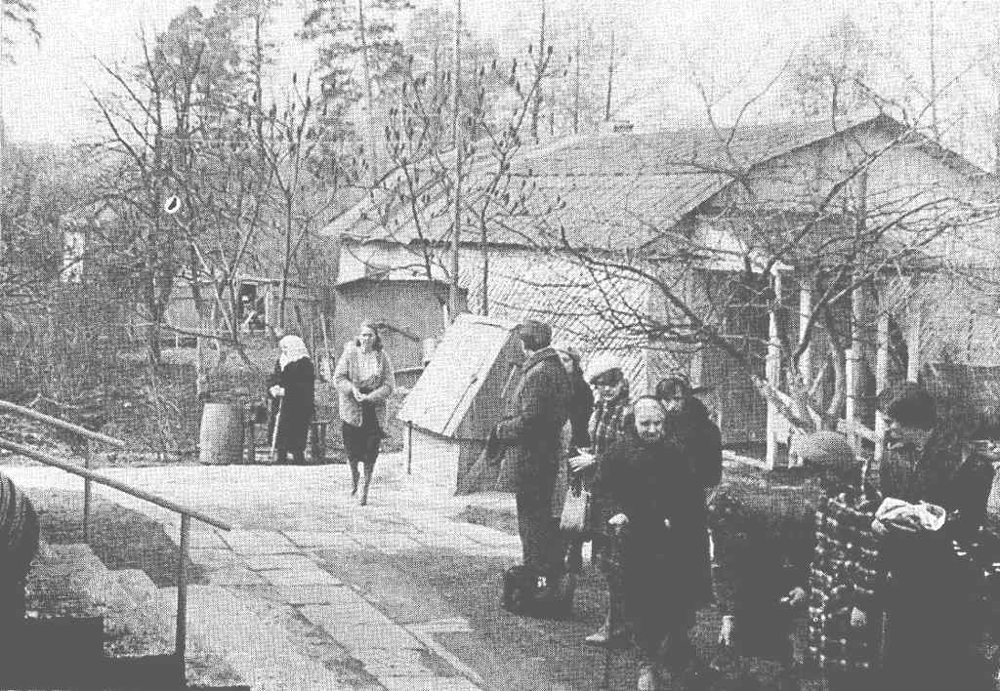Однак кияни не дуже поспішали до костела, багато хто замислювався, що то за костел без священика і, взагалі, чи безпечно туди ходити? А із священиками дійсно вийшло замкнуте коло. Священика мали призначити власті і, природно, вони повинні ж були й зареєструвати парафію. Але для реєстрації парафії саме і був необхідний священик! Та ми вже звикли до того, що не можна одержати все відразу. Оскільки парафію не було зареєстровано, то ми постійно жили під загрозою, що нас всіх заберуть до міліції чи КДБ. Впродовж деякого часу, після таких погроз, ми змушені були молитися в лісі.
Однак з часом людей стало приходити все більше й більше. Цікаво виглядали наші
Меси
без свяще ника, мабуть в середні віки нас вважали б за єретиків і спалили б на вогнищі. Звичайно під час
Меси
міністранти клали на вівтар орнат і потому читались всі відомі нам молитви, співались пісні і псалми, кожний вводив у таку молитву все, що бажалось, одного разу трапилося навіть таке, що під час
Євхаристійної літургії
нас благословляли... порожньою чашою.
Як ми намагалися перехитрувати владу
Нарешті мені це набридло, і я написала до Одеси знайомому мені отцю Тадеушу Хоппе, котрий приїздив до нас ще в каплицю на вулиці Львівській, благаючи його про допомогу, позаяк ми боялися, щоб наша католицька парафія не перетворилася на секту. Листа підписали майже всі наші парафіяни. На щастя, отець Тадеуш охоче відгукнувся на наше прохання. Він почав працювати над реєстрацією парафії.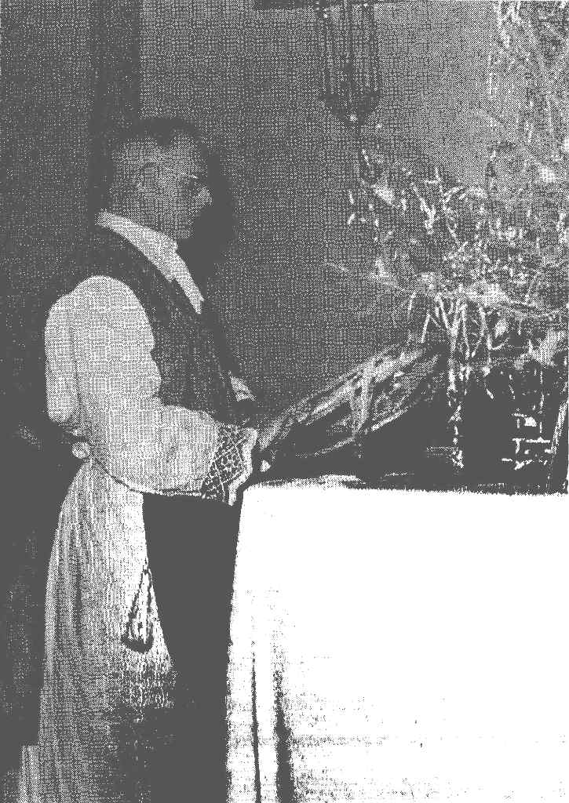
14 вересня (здається, 1973 року), це саме було свято Воздвижения Святого Хреста. На перше храмове свято нашої парафії були заплановані різноманітні урочисті церемонії з можливістю отримання індульгенції. Влада висунула необхідну умову: якщо вони нарахують 700 осіб, то парафія одержить право на реєстрацію - легальне життя.
Ми розіслали гінців, як то кажуть, у всі сторони. Чимало людей відгукнулось, приїхали навіть з віддалених районів, але до бажаного числа все ж не вистачало. І ми вирішили, що під час церемонії будемо рухатися, аби нас неможливо було перерахувати. Таким чином нам і вдалось перехитрувати владу.
Отець Тадеуш отримав дозвіл приїжджати до Києва один раз на місяць і міг залишатися в парафії впродовж тижня. Скільки він вистраждав спільно з нами! Навіть не було кому зварити йому обід. Нишком, позаяк не було на те дозволу, з чотирьох кімнат ми зробили одну - залу, потім зробили другий вхід і з трьох боків добудували веранди. На антресолях зробили маленьку кімнатку для священика.
Люди приходили до костелу відразу з праці, а їх очікувала йде робота до пізньої ночі, позаяк всі ці перебудови ми змушені були виконувати самотужки. Коли дійшла черга до стелі - виник конфлікт. Отець Тадеуш вважав, що стелю слід розібрати, а наш староста, я про нього вже згадувала, пан Валентин Житкевич, стверджував, що цього робити аж ніяк не потрібно, бо за такий
номер
влада зніме його з посади старости. Сталося ж, однак, так, що впродовж однієї ночі стелю зняли. Влада відразу ж використала цю ситуацію як нагоду замкнути костел і усунути Житкевича. Один час він був навіть ображений на о. Тадеуша і парафіян за те, що зневажили на його перестороги і набули собі зайвого клопоту. За порадою о. Тадеуша старостою обрали Марію Саваттєєву.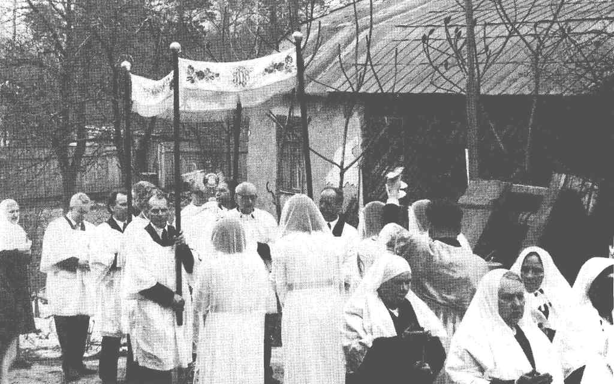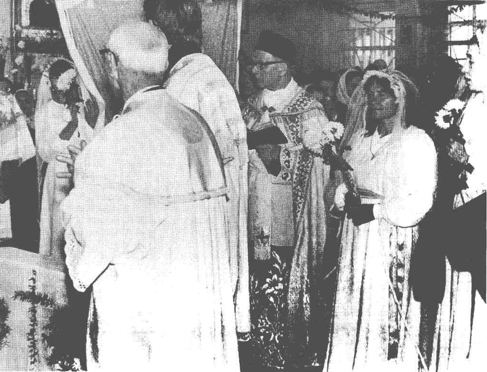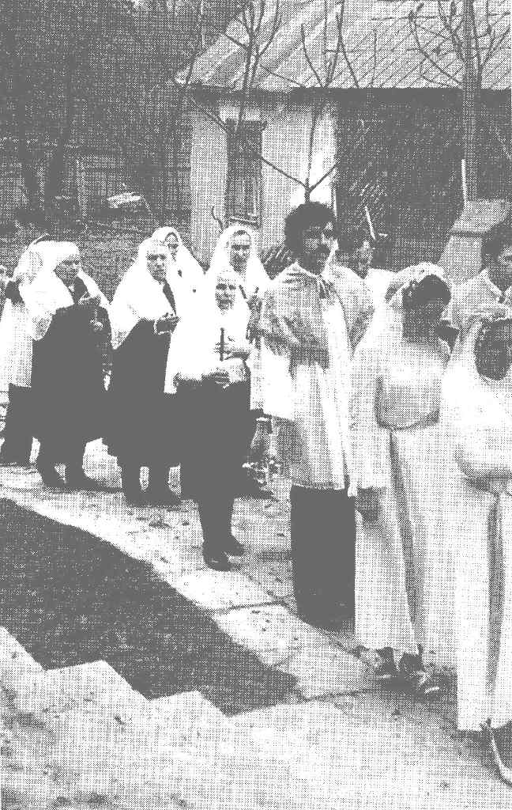
Стабільність
Отець Тадеуш весь цей час домагався, аби в нас був постійний священик, позаяк йому важко було працювати одночасно з двома парафіями. Однак наразі всі наші наміри були приречені на невдачу, бо влада робила все, аби залишити нас без постійного священика. І лише в 1980 році, коли відбувалася Олімпіада, влада, буцімто, погодилась на те, щоб отець Ян Крапанс служив у парафії постійно. Кажу
буцімто
, позаяк отцю Яну постійно перешкоджали, всіма можливими способами утруднюючи його служіння.
По смерті пані Ельжбети Верещинської отець Ян перереєстрував костел на Зофію Дибовську.
А 16 серпня 1985 року від Ради народних депутатів Леніградського району ми одержали гарантію безстрокового права власності на наш храм, всі дерев'яні стіни були замінені цегляними, проведені водопровід, газ, каналізація.
Насамкінець хочу назвати всіх тих, хто самовіддано працював над створенням парафії Воздвижения Святого Хреста і котрих, на жаль, уже посеред нас немає. Це — Валентин Житкевич, наш староста й душа всіх справ, Марія Бабійчук, Олена Кухарська, Теофіля Поліновська, Ян Терлецький, Юлія Вітковська, Розалія Островська, Юзефа Рай, Марія Завадська, Леопольд Дембогурський і багато інших.
Майже у кожного з нас були потрібні для Меси речі: комуніканти, хостії, чаші (в мініатюрі), орнати, альби, молитовники. Коли ми тільки почали збиратися, то молилися
по латині
, коли ж до нас почали приїжджати ксьондзи з Польщі, вони привезли нам
новий обряд
- Меса відправлялася польською мовою (після II Ватиканського Собору з'явилася можливість відправляти Меси на рідних мовах вірних). Всі речі, котрі ми старанно зберігали, я віддала вже кс. Яну Крапансу.
Спогади о. Яна Крапанса, котрий більше десяти років був настоятелем парафії Воздвиження Святого Хреста й віддав чимало сил для її становлення, розвитку духовного життя. О. Ян служив у парафії від 1980 до 1991 року. Це були часи досить напружені, довелося вести боротьбу за виживання і збереження парафії, бо ж Святошин був єдиним притулком поляків і всіх католиків Києва та його околиць.
Він розповідає про свій приїзд до парафії, про умови, в яких ііому довелося працювати.
Я радію, коли бачу, як молоді люди шукають істину, Бога. І як не дивно, але саме вони приходять до Нього першими, а вже потім їхні батьки. Бажаю всім бути молодими духом, веселитися, радіти, що вони нарешті знайшли Христа, хоча, правду кажучи, це Він знайшов їх. Благословляю всіх іти тим Христовим шляхом, бути завжди впевненими у Його перемозі. Молоді бажаю будувати майбутнє України тільки спільно з Христом
.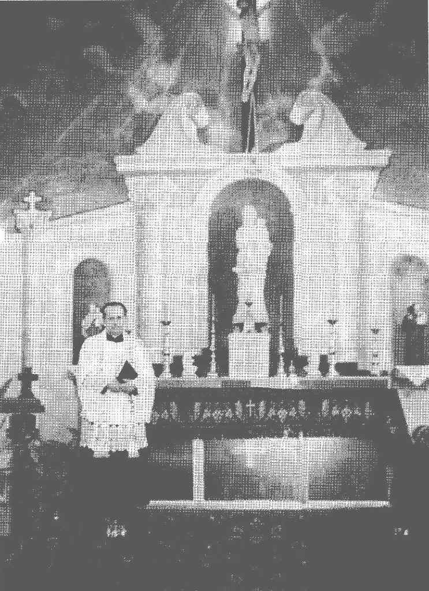
Перші роки мого перебування в Києві я міг би назвати роками великої й важкої праці. Роботи було дуже багато, але мушу признатися, що вона була приємною, бо ж до чого ще покликаний священик, як не до служіння. А ще (передусім) він повинен мати в собі Христову любов і нести її людям. Комуністична держава чимало тоді забороняла Церкві, наприклад, я міг проводити Богослужіння тільки двічі на місяць. Звичним явищем було цькування, постійні штрафи та суди, мені не раз ставили за провину порушення так званого паспортного режиму. Деякий час мені доводилося навіть мешкати в сараї. Були такі люди, які доносили владі про все, що відбувається у нас в парафії. Мене довго намагалися переконати, що немає чого священикам робити в Києві, вони більш потрібні в селах, навіть були спроби відрядити мене до Вінницької області. Дяка Богу, що все пройшло і залишилося в минулому, сподіваюся, що ці часи вже не повернуться.
Окрім безпосередньої роботи в парафії доводилося самому обслуговувати околиці Києва, їздити за сотні кілометрів до Білорусії, аж під Мозир. Це було надзвичайно важко, але як же потрібно! Я не рахувався ні з чим, та на кожному кроці хтось намагався
вставити палиці в колеса
, інакше кажучи, ми постійно комусь заважали. Ось, наприклад, як це було з нашою каплицею. Спочатку ми отримали дозвіл на обкладання будинку костелу цеглою, а коли роботу було закінчено, згори пішов інший наказ - цеглу розібрати, погрожуючи поховати наш костел під бульдозером. Робити було нічого - довелося підкоритися. Але все-таки ми свого домоглися, я дуже вдячний за допомогу польським фірмам
Будополь
та
Будімекс
, котрі пізніше допомогли реконструювати наш храм.
Мені важко зараз пригадати постійну кількість віруючих, але пам'ятаю добре, що на недільну Літур гію збиралося дуже багато людей, храм не вміщав усіх бажаючих, частина віруючих змушена була стояти на вулиці.
На Богослужіння приходили люди різного віку. В той час у Києві навчалося багато польської молоді, яка теж приходила до костелу. На кожній Месі був присланий владою
стукач
, який потім інформував про все, що відбувалося, так що влада була в курсі наших справ. Інколи вчинялися провокації - вибивали шибки тощо. Але ми намагалися до
винуватців
таких подій ставитися завжди по-доброму і не піддаватися на різні провокації.
У неділю я відправляв три Меси, у буденні дні - по дві, і то, коли це було можливим. Але, пам'ятаю, в 1986 році мене почали просто виганяти з Києва, забороняли жити в Святошині, мотивуючи відсутністю прописки, якої я безуспішно домагався роками. Я був невигідним для влади, persona non grata, не був слухняним, не йшов на компроміс, забирав касу і всі церковні книги, щоб запобігти впливу та втручанню
стукачів
. Ясно, що це мало кому подобалося. Тоді я змушений був виїхати на кілька місяців до Латвії, звідки я родом. Майже півроку Київ залишався без священика, але я намагався приїжджати сюди — хоч раз на два тижні, і кожного разу доводилося долати півтори тисячі кілометрів. І раптом у вересні, коли завдяки старанням парафіян я повернувся до Києва (це було через півроку після Чорнобильської катастрофи), мені дозволяють проводити Богослужіння щодня. Я відразу не зміг зрозуміти в чому справа, але пізніше виявилося, що владі було важливо не допустити, щоб люди виїжджали з міста, тому й нам сказали:
Якщо не будете боятися і втікати, залишитеся в Києві, то можете служити Месу щодня
.
Особливо мені запам'ятався приїзд до Святошина Матері Терези з Калькутти. Це було у серпні 1987 року. Мати Тереза була гостем нашої парафії. Привітати її прийшло дуже багато людей, у нас уже тоді знали про подвижницьку діяльність цієї мужньої і скромної жінки. Тоді ж вперше до нас завітали представники і влади, і Церкви. А ще, звичайно, незабутньою подією було святкування 1000-ліття Хрещення Русі. Тоді вперше в Україну приїхали єпископи і священики з різних країн світу. Зважте, що наша парафія була єдиною католицькою парафією Києва і його околиць, а тому, звісно, інтерес до неї був дуже великий".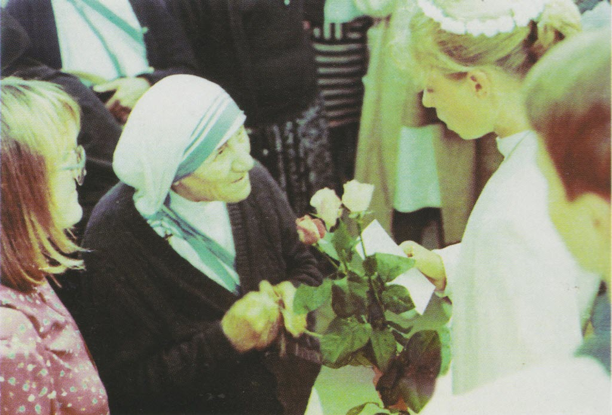 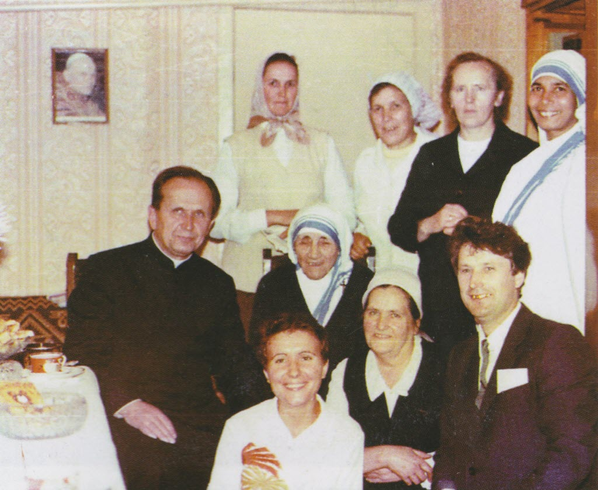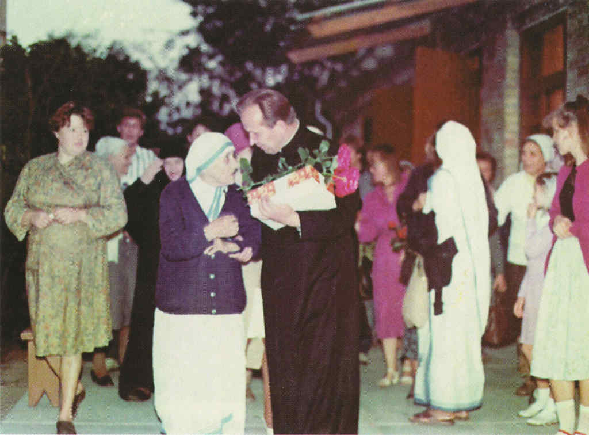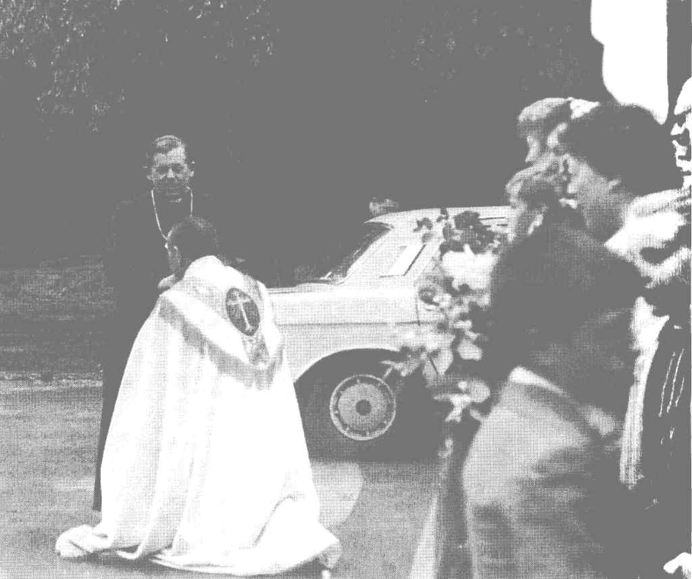
Спогади сестри Станіслави із Згромадження Малих Сестер Непорочного Серця Марії
Оскільки католицька каплиця в Києві по вулиці Шепетівській вже діяла, наїжджав до Києва отець Тадеуш Хоппе з Одеси. На його прохання в
Секреті
, 11 лютого 1978 року до Києва приїхала сестра Станіслава, а зверталися тоді до неї
пані Стася
.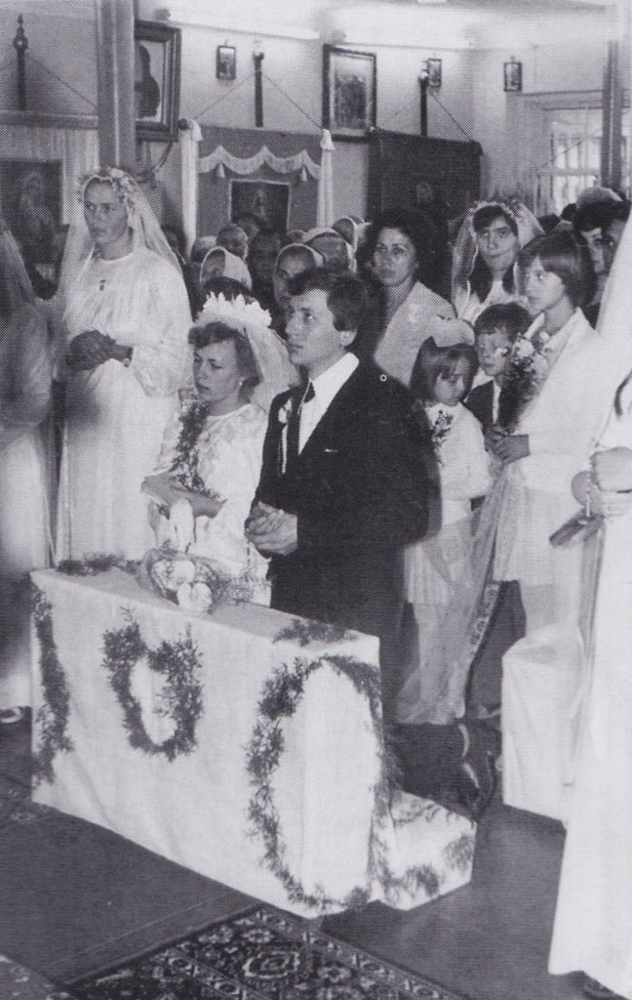
Оскільки в ті складні часи неможливо було дістати ані прописки, ані помешкання, то сестрі довелося шукати місця, де б переночувати.
На прохання сестри відгукнулася старенька з лікарні в Боярці, пані Марія, прийняла на квартиру і допомогла прописатися.
Сестра Станіслава працювала в Боярці в лікарні. У вільний час приїжджала до каплички і допомагала в різних справах. З навчанням катехизму в ті часи було складно, дітей ходило дуже мало. Але вже десь на початку 1979 року, як тільки з'явилася можливість, навчання катехизму почали проводитися. Інколи у когось вдома, а влітку - то перед капличкою на лавочці з шматочком хліба в руці, бо невідомо було, хто сидить поруч.
Отець Тадеуш приїжджав дуже рідко, бо мав дозвіл перебувати у Києві лише один тиждень на місяць, але цьому ще перешкоджали відстань і його власний стан здоров'я.
У 1980 році, під час Олімпіади, тодішня влада попіклувалася про священика, позаяк іноземні спортсмени були віруючими, і на той період запросили кс. Яна Крапанса з Хмільника. А після Олімпіади, від липня місяця 1980-го року він став приїжджати більш-менш регулярно. Йому так само можна було перебувати в Києві один раз на місяць упродовж тижня.
Але він приїжджав якомога частіше, за що його частенько карали.
Викликали кс. Яна до районного управління у культових справах, де не раз примушували писати пояснення.
Якось сталося так, що одного вечора о. Ян не зміг виїхати і залишився ночувати в капличці, але позаяк господиня будинку пані Ельжбета на той час вже померла, то капличку щоночі по черзі охороняли парафіяни. І того "прекрасного" вечора о 23 год до каплички під'їхав автобус. Залунав дзвінок. Сестра Станіслава була якраз тієї ночі на чергуванні. Попросили відкрити хвіртку, доки сестра пішла взяти ключі, дванадцятеро дружинників перескочили через огорожу і стали біля дверей. Поставили до стіни священика і сестру, питаючи, навіщо він залишився на ніч.
До сестри Стасі, як її частіше називали, в 1980 році приїхала ще одна сестра, і вже вдвох вони мешкали в маленькій службовій квартирі по вул. Леніна. Чому службовій? Бо сестра Станіслава, щоб дістати прописку і мати де мешкати, пішла працювати двірником, але одночасно працювала й при костелі. А після 10-років праці двірником (такий був термін, щоб залишили жити в квартирі) стала пра цювати лише в костелі.
У 1988 році Господь дав нові покликання, котрі прийшли до Згромадження Малих Сестер Непорочного Серця Марії (гонораток). Це були сестри Фаустина і Матеуша.
15 березня 1986 року державні чиновники змуси ли кс. Яна виїхати з Києва, бо зачасто приїжджав до своєї пастви. Він виїхав до Латвії, звідкіля з велики ми труднощами повернувся 16 липня 1986 року.
Після Чорнобильскої катастрофи 26 квітня 1986 року кс. Яну і його парафіянам настало полегшення, бо сказали: якщо не боїшся Чорнобилю, то можеш працювати. Сестри від того часу змогли вільно займатися катехизмом і так працювали в Святошині до 1990 року.
Потому кс. Ян і сестри перейшли до костелу св. Олександра, котрий знаходиться в самому центрі Києва. Там було багато праці, і ремонт, і господарство, і катехизація. Але сестри гоноратки, окрім того що допомагали при костелі, ще працювали на державних підприємствах, навчалися в коледжі св. Фоми Аквінського.
Після перебудови в Україні сестри-гоноратки за допомогою доброчинної організації з Німеччини придбали нове помешкання в Києві, по вулиці Жмеринській.
“У 60-х роках у Києві не було костелу, і часто навідувався до вірних світлої пам'яті кс. Мірецький із Підволочиська (Тернопільська обл.).
Служив Службу Божу в приватній квартирі пані Ядвіги Дедюх.
У Службі брали участь біля 20 осіб старшого і середнього віку, а також чоловік господині та донька Євгенія.
Дуже швидко зібралися вірні, тілько-но дізналися, що приїхав ксьондз.
Пані Ядвіга запропонувала відправити Службу Божу. Я сказав, що не маю нічого для цього. Віруючі мені відповіли, що вони мають все: чаші, альби, орнати - все необхідне для Меси, але не мають ксьондза в Києві.
Я перебував у Києві впродовж тижня. Одного дня до мене прийшов сусід пані Ядвіги - православний Андрій, котрий розповів про себе таку історію.
Під час війни Андрій (росіянин) служив у Польській Повстанській армії, котра була сформована на території Радянського Союзу. Якось був дуже тяжкий випадок - німці наступали, Андрій боявся потрапити у полон до них і попросив одну жінку сховати його. Та не хотіла цього зробити, тоді Андрій сказав до неї польською мовою: прошу тебе зроби це заради
Rany Chrystusa
(Ран Христа), і вона згодилася і заховала його. Таким чином, як вважає Адрій, Рани Христа врятували йому життя.
Від того дня Андрій постійно відвідував церкву, не пропускаючи жодної неділі чи свята”.
“Хресту Твоєму поклоняємося, Владико,
і святе Воскресіння Твоє славимо”.
Було це 312 року за Римського імператора Константина, мати якого, цариця Єлена, була християнкою. Саме тоді відбулася чудесна подія, що змінила становище римських християн. Перед вирішальною битвою з кесарем Італії, котрий переслідував і не любив християн, Константан і його військо побачили ввечері на небі знамення Хреста Господнього й напис із зірок:
Цим переможеш
. Тієї самої ночі уві сні Константан побачив Самого Ісуса Христа, Котрий звелів йому зробити на військових знаменах хрест і провістив, що Константин переможе у цій битві, що й сталося наступного дня.
Після цього свята Єлена, за дорученням Константина, дісталася до Єрусалима, щоб знайти Хрест Господа нашого Ісуса Христа. Довго шукала вона і нарешті від одного старого іудея довідалася, що Святий Хрест закопаний глибоко в землі в одному потаємному місці. Хрест було знайдено 14 вересня 320 року і на згадку про це в Єрусалимі 13 вересня 335 року була освячена Базиліка Гробу Господнього, а наступного дня відбулася урочистість Воздвижения Святого Хреста. Свято відзначається повсюдно від 629 року.
Монастир - це пророче місце, в якому створіння
.
стає прославою Бога, а заповідь любові, якщо її конкретно
притримуються, стає ідеалом людського співжиття,
де людська істота шукає Бога, без перепон і перешкод,
стаючи прикладом для всіх, носячи їх у своєму серці
та допомагаючи їм шукати Бога
Апостольський лист Світло Сходу - Orientale Lumen
Папи Івана Павла II
Задовго до наших днів, коли світ тільки готувався до приходу Христа, були люди, котрі під натхненням Духа Святого вели життя, посвячене Господу, і, шукаючи Живого Бога, палали любов'ю до Нього; оживляли віру, очищали суспільство, ставали прикладом для тисяч і тисяч послідовників.
Однією з таких величних постатей старозавітньої історії є св. пророк Ілля, полум'яний дух котрого підніс його понад часом і простором, вчинивши близьким і зрозумілим для християнського світу.
Походив Ілля з містечка Тішбе (звідси, до речі, його прізвисько - Тешбій), жив у IX ст. до Христа. Його життя стало зразком для перших християнських подвижників. Іллю по справедливості вважають основоположником чернецтва та патріархом численної чернечої “родини”.
Офіційна влада не жалувала пророків, тому Ілля і його учні створили собі осідок на горі Кармель, на кордоні між Галилеею і Самарією, у важко доступній частині Палестини. Передання говорить, що спільнота на горі Кармель проіснувала аж до часів, поки по світі почала ширитися Євангельська наука.
“Пророчі учні” - послідовники св. пророка Іллі - з радістю прийняли нове вчення і стали засновниками славного ордену Кармелітів.
Усі історичні джерела згідно свідчать про чільне місце Матері Божої в житті ордену. Вона є сенсом його духовного життя і формою святості. Все духовне життя Кармелю є глибинно марійним у своїх основах, назві, літургії, містиці, спогляданні (повна назва є: Орден Братів Босих Пресвятої Діви Марії з гори Кармель).
Розвиток культу Матері Божої в Кармелі є виразом переконання і глибокої віри в її посередництво в благодаті і в її роль як Співвідкупительки людського роду. Коли орден переживав тяжкі часи через зміну життя після переселення в Європу і терпів переслідування навіть з боку духовенства, тоді Мати Божа об'явилася Генералові ордену Саймону Стоку, порадивши звернутися про допомогу до Папи Іннокентія IV.
Ця подія стала благодатною для Кармелю, і з того часу з'явився Покров (скапулярій) Божої Матері над орденом, бо одного дня в часі молитви про благодать для ордену, Мати Божа показала Покров Саймону Стоку і сказала:
То буде для тебе і всіх кармелітів привілеєм, хто помре в Покрові, не зазнає вогню пекельного
. Час об'явлення припадає на 16 липня, коли ми відзначаємо свято Покрова Богородиці.
У 1274 р. II Ліонський собор офіційно затвердив орден Кармелітів, приєднавши його до жебракуючих орденів.
У якийсь період свого розвитку орден кармелітів почав відходити від своїх духовних джерел, обзаводячись цінностями земними; і тоді з'явилися св. Іван від Хреста і св. Тереза Авільська - дві душі, котрим однаково незнайомі й угода, й компроміс, але котрі вільно почувалися лише в абсолюті, простували одним духовним шляхом, перший - у пітьмі ночі, а друга - серед білого дня.
Саме вони стали реформаторами ордену Кармелітів в Іспанії і започаткували орден
Босих
Кармелітів із Статутом і способом чернечого життя. Перший реформований монастир виник в Іспанії 24 серпня 1562 р.
Власне, призначенням кармелітів є підтримка посеред нас містичного вогнища, чисте полум'я якого освітлює все, що є визначного в католицькій думці, інтелектуального потенціалу духовної школи ордену, а також євангелізація населення.
У 1604 році чотири ченці ордену Кармелітів Босих, які належали до італійської конгрегації, та один світський лицар, за дорученням самого Папи Клементія VIII, були послані орденом на місію до Персії, їхній шлях пролягав через Німеччину, Польщу, Русь і Каспійське море.
Митрополит Іпат Потій, котрий до справи єдності Церкви докладав великих зусиль, навіть життя віддав би за неї, знаючи ситуацію в Руській Церкві, вирішив запросити Кармелітів Босих для євангелізації свого народу. Рішення послати ченців на місію було прийняте 5 травня 1605 року, але з різних обставин справа відкладалася.
Лише у листопаді 1613 року о. Матей від св. Франциска і о. Андрій Бжехва приїхали до Львова, де відбулося заснування монастиря. Це були перші кроки ченців на теренах України. Ми ж торкнемось сучасної діяльності ченців кармелітів у Києві, пов'язаної з розвитком нашої парафії.
У період перебудови на допомогу місцевим священикам почали прибувати єпархіальні та орденські священики з-за кордону. Після відновлення організаційних структур (Львівської митрополії, Житомирського і Кам'янець-Подільського єпископства) Церква вийшла з підпілля та розпочала свою євангелізаційну діяльність.
Коли вперше виникла можливість приїзду римсько-католицьких священиків для служіння на терени колишнього Радянського Союзу, то почали з'являтися тут також і ченці Ордену Кармелітів Босих. Простуючи шляхами святого Рафала Калиновського, котрий ще інженером будував залізничну колію у напрямках Київ-Одеса, Київ-Курськ, вони також дісталися до Києва. Сталося це наприкінці вісімдесятих років. Відвідали ці терени о. Едмунд, о. Августин Квятковський, о. Броніслав Тарка, а також о. Альберт Вах і брат Ришард Столярчик (жовтень 1989).
Присутністю кармелітів у Києві значною мірою завдячуємо ініціативі сестер кармелітанок-босих, а також кс. Яна Крапанса, котрий до січня 1991 року (канонічно до 19 березня 1991р.) був настоятелем парафії в Святошипі, і кс. Юрія Нагорного з-під Вінниці (дієцезія Кам'янець-Подільська). Це вони запросили на місію до Києва, загалом на Схід Європи, ченців споглядального ордену, головним завданням яких є безустанна молитва.
У липні-серпні 1990 р. генерал ордену о. Філіп де Баранда відвідав Литву, Білорусь і Україну. В той час кармеліти вже служили в Україні. Восени 1989 року до Полонного дістався о. Серафим Тишко. У лютому 1990 до Львівської кафедри приїхав о. Станіслав Фудаля, а в липні, після висвячення, до нього приєднався о. Ришард Столярчик. Пізніше о. Серафим з Полонного переїхав до Бердичева з метою домагатися повернення кармелітам монастиря, відібраного комуністичною владою, і відродження душпастирської праці.
Обставини у Львові не давали шансу на постійне замешкання кармелітів, тому в серпні 1990 р. було прийнято рішення залишити Львів. Згаданий візит о. Генерала був попередником тих ініціатив і раніше виконуваних приготувань до започаткування Кармелю в Києві в другому півріччі 1990 р.
У вересні о. Ришард дізнався, що його служіння у Львові закінчиться відразу ж після повернення Римсько-Католицькій Церкві костела св. Олександра в Києві. З огляду на це о. Ришард уже щомісяця приїжджав до парафії у Святошин, аби ознайомитися з обставинами.
16 січня 1991 року Папа Іван Павло II призначив кс. Яна Пурвінського Єпископом Ординарієм Житомирської дієцезії. Після його офіційного приз начення о. Ришард разом з кс. Яном поїхали до Житомира, щоб одержати згоду і благословіння на служіння отців Кармелітів Босих у Києві та його околицях. Великий внесок зробив у ці справи також о. Броніслав Тарка.
Коли у січні 1991 року було повернено костел св. Олександра, то настав час о. Ришарду перебиратися до Києва, де він мав стати духовним наставником сестер кармелітанок і настоятелем парафії.
14 лютого 1991 року розпочалося служіння Кармелітів Босих у Києві в костелі Воздвижения Святого Хреста. Це було свято св. Кирила і Мефодія - апостолів-слов'ян. Тоді до Києва приїхало три черниці: с. Марія Магдалена, с. Целіна і с. Анна, о. Ришард і о. Станіслав, котрий пробув тоді в Києві два дні.
Відразу необхідно було організовувати не лише життя парафіяльне, але і звичайний побут. Внутрішній інтер'єр костелу, господарських приміщень був дуже бідним, навіть не вистачало посуду аби споживати спільно трапезу. Спочатку матеріальну поміч надавали o. Рафал Керніцький і о. Станіслав Фудаля, бо парафіяльна каса була порожня.
Найближчого тижня приїхали до Києва о. Євгеній Моравський, о. Броніслав Тарка і о. Стефан Прашкевич. Відбулися урочистості з нагоди початку кармелітанського служіння в Києві, на які прибув кс. Ян Крапанс і офіційно, в присутності парафіян, передав приміщення костелу під опіку отців Кармелітів Босих. На закінчення Меси було виголошено спеціальне благословіння сестрам Кармелітанкам Босим.
Цього ж року, 19 березня, в костелі саме було храмове свято св. Йосипа, владика Ян Пурвінський, відправляючи Месу, оголосив, що в Києві є вже дві римсько-католицькі парафії - Воздвижения Святого Хреста і св. Олександра, а настоятелем першої з них призначено о. Ришарда Столярчика.
Перші тижні люди думали, що життя віруючих в Києві згромадиться лише при костелі св. Олександра, бо до Святошина приїхали сестри-кармелітанки і мешкатимуть в костелі. Інформації про присутність священиків кармелітів не було. Тому спочатку було дуже мало людей на Месах. У буденні дні лише по кілька осіб. За декілька місяців ситуація прояснилась: ті, кому було легше дістатися до центру Києва, їхали до костелу св. Олександра, а хто жив ближче до Святошина - приїжджали сюди. Природним способом відбувся розподіл парафій.
На Великдень 91-го року до парафії приїхали диякони: бр. Максиміліян (Здіслав) Подвіка і бр. Давид Ульман. Пізніше виявилося, що вже незабаром, після висвячення на священиків, вони розпочнуть служіння тут, в Україні.
О. Максиміліян приїхав до Києва на свято Петра і Павла, де 29 червня відправив приміційну Месу й уділив приміційного благословення присутнім в костелі св. Олександра, а ЗО червня - в костелі Воздвижения Святого Хреста. Відтоді в Києві стало двоє священиків - отців Ордену Кармелітів Босих.
Життя парафії значно пожвавилося з прибуттям священиків.
Весною того ж року розпочалось приготування до Світового Конгресу молоді, котрий відбувся в серпні 1991 року в Ченстохові, на Ясній Горі, в присутності Папи Івана Павла II. За ініціативою кс. Яна Крапанса, отці кармеліти щотижня в костелі св. Олександра провадили зустрічі для молоді, котра мала їхати на цей Конгрес. З Києва поїхало з кс. Яном і о. Максиміліяном близько 500 осіб. Після повернення з Ченстохови більшість вже не була зацікавлена ні катехизмом, ні зустрічами. Залишилася однак невелика групка молоді, яка мала бажання поглиблювати своє духовне життя. Були організовані так звані
Зустрічі по середах
, котрі збирали великі гурти молоді, інколи більше ста осіб. По середах їздили отці також до однієї з шкіл на Троєщині. Завдяки цим зустрічам, що відбувалися впродовж року, значна частина людей прийшла до костелу.
З часом залишилися лише молитовні суботні зустрічі в Святошині.
Через деякий час до спільноти черниць-кармелітанок приєдналися дві сестри з краківського монастиря: с. Рафаела і с. Люцина.
У священиків завжди було багато праці з молоддю і дітьми. Щопонеділка їздили вони до школи в Бучу, в інші дні відвідували школи Києва. Але найбільші плоди приносили систематичні зустрічі.
Наприкінці грудня 1991 р. о. Максиміліян поїхав з великою групою київської молоді (близько 200 осіб) до Будапешта. Поїздка була організована за допомогою спільноти Тезе.
4 січня 1992 р. був частково повернений костел св. Миколая. Так повстала третя римсько-католицька парафія у Києві.
8 січня 1992 р., через багато років після заборони Церкви, єпископ Ян Пурвінський спільно з о. Ришардом прийняли рішення розпочати підготовку парафіян до Таїнства Миропомазання, а 16 липня 1992 р. єпископ уділив це Таїнство вірним.
Перед Великоднем 1992 року було зроблено в костелі додаткове приміщення, котре виконувало функцію захристя, парафіяльного бюро, місця для зустрічей, а також келії для двох отців - Ришарда і Максиміліяна. До того сестри мешкали внизу, а отці на антресолях. Вже в червні мешкали отці в захристі.
У серпні 1992 року о. Максиміліян з групою парафіян (близько 90 осіб) подорожували до Франції, зокрема до Лурду.
Щораз більше вірних приходило на Служби Божі, і все гостріше відчувалась потреба в приїзді третього кармеліта до Києва. І наприкінці грудня 1993 року до костела прибув о. Давид.
Упродовж 1991-93 років парафію відвідало багато гостей із різних країн світу. 26 травня 1993 року в костелі вперше зібрався на молитву Президіум Легіону Марії Матері Божого Милосердя.
25 серпня 1993 року з ініціативи єпископа Яна Пурвінського повстає Благодійний фонд
За гідність людини
, духовним керівником і головою правління якого став о. Максиміліян. Основною метою Фонду є боротьба проти тотального вбивства дітей в лоні матері, охорона життя ненароджених, реабілітація хворих дітей, допомога незахищеним верствам населення, навчання природним методам планування родини.
Так поступово змінювалося життя кожного з нас. З'явилося прагнення чинити добро. Особливо отримали благодать бачити чинену кривду найменшим, ненародженим ще дітям, невинна кров котрих ллється потоками в нашій країні. Почали розуміти, що то є однією з найбільших трагедій нашого народу, котру необхідно подолати любов'ю.
11-13 вересня 1993 року о. Максиміліян і дві подружні пари з парафії взяли участь у закритих реколекціях для подружніх пар, що проходили в Бердичеві. А 25 вересня відбулася перша зустріч подружніх пар в костелі.
Наприкінці листопаду того ж року відбулися перші закриті реколекції для подружніх пар у Києві, навесні 1994 року - другі. Зустрічі дали змогу зібрати групу з дванадцяти подружніх пар для участі в Міжнародному конгресі сім'ї у Варшаві. Провадить роботу з подружніми парами о. Максиміліян.
1 травня 1994 року парафія святкувала своє 25-річчя. Цього самого дня була вперше відправлена Меса в новому монастирі сестер-кармелітанок.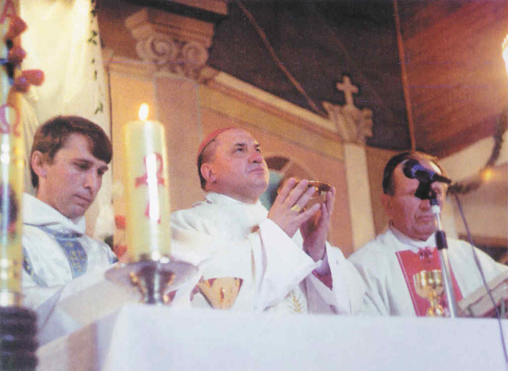
2 травня єпископ Ян Пурвінський запропонував кармелітам прийняти під опіку вірних Тетерева.
8 травня 1994 року розпочалися перші в Україні курси по вивченню природних методів планування родини, організовані Благодійним фондом
За гідність людини
. Окрім киян на курсах навчалося 15 осіб з різних куточків України.
11-12 травня були відправлені Меси в Тетереві, котрі стали початком кармелітанського служіння в цій місцевості.
20 червня було одержано дозвіл на побудову господарських приміщень і класу для навчання дітей катехизму в Святошинській парафії.
14 вересня, тепер це вже було храмове свято нашого костелу, ще 37 осіб прийняло Таїнство Миропомазання.
24 грудня відбувся вперше
Святий вечір
у костелі для парафіян.
13 квітня 1995 року, у Великий Четвер, єпископ Станіслав Широкорадюк освятив новий вівтар.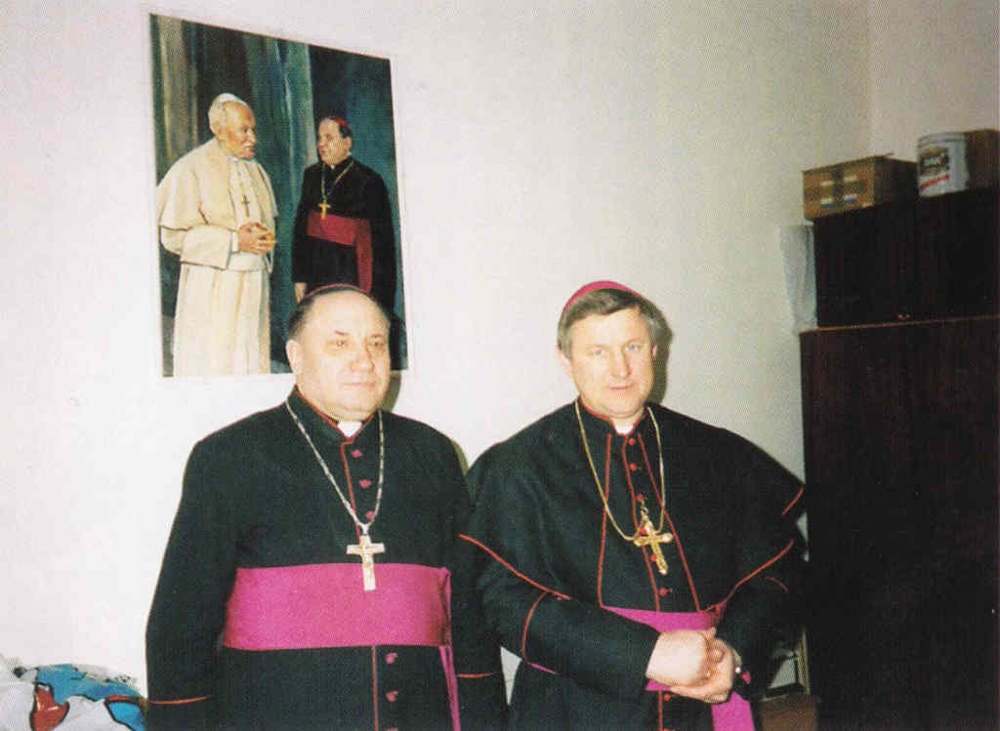
Від Великодня розпочався пошук віруючих католиків у місцевості між Києвом і Тетеревом з метою створення нових парафій.
13 травня Тетерів відвідали з евангелізаційною місією Президіуми Легіонів Марії, поїздка була корисною як легіонерам, так і жителям селища.
1 травня розпочалося будівництво так званого
сарайчика
- господарського будинку для потреб парафії. На будівництві, котре просувалося дуже швидко, був лише один працівник - не член нашої спільноти.
На початку червня в Києві (Пуща-Водиця) відбувся міжнародний конгрес
Любов, сім'я, життя
, організований міжнародною організацією HLI, в якому взяли участь близько 50 осіб з нашої парафії. На конгресі відбулася презентація енцикліки Папи Івана Павла II
Євангелія життя
.
8-12 липня з генеральським візитом до України прибув о. Генерал Каміль Мачіссе, спочатку до Києва, далі до Житомира, Бердичева, Харкова.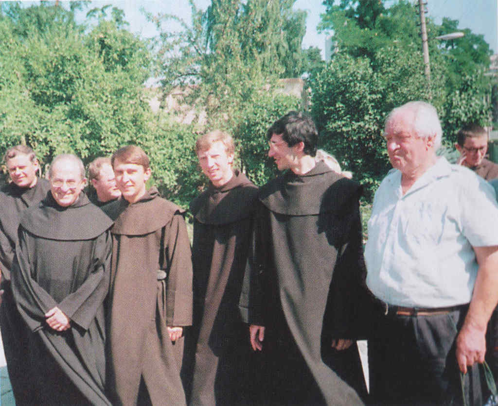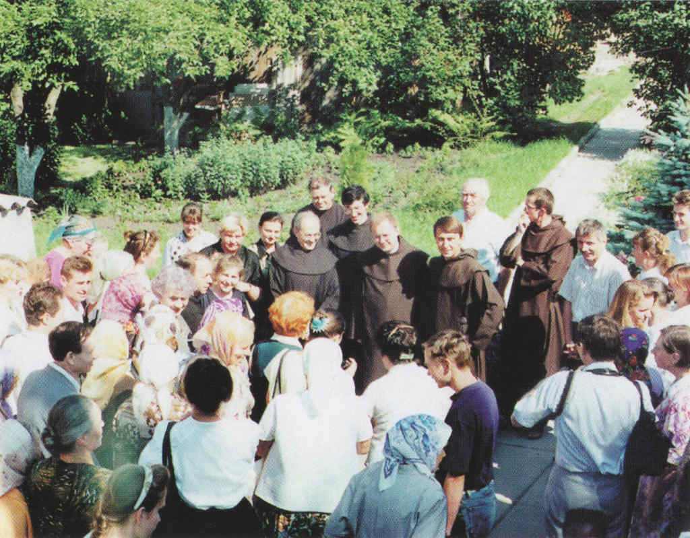
Наприкінці серпня початку вересня були збудовані дзвіниця над костелом і хори.
16 жовтня 16 парафіян склали обітниці про життя в спільноті кармелітів світських.
2 березня 1996 року приїхав на практику до костелу брат Петро Гершевич.
15 травня 1996 року залишив Київ о. Давид, який поїхав до монастиря в Чехії.
11 червня до Києва приїхав вже отець Петро і привіз дзвін
св. Йосип
— подарунок парафії Матері Божої Безустанної Допомоги з Явожно (Польща). 26 червня був піднятий у костельну дзвіницю дзвін, котрий вперше задзвонив 27 червня о 8 год ЗО хв. на свято Матері Божої Безустанної Допомоги.
На початку липня з о. Петром вперше з нашої парафії вирушила група прочан до храму Матері Божої Бердичівської.
3 вересня 1996 року з монастиря в Чехії приїхав до Києва брат Славомир.
У червні 1997 року приїхав служити до парафії о. Ігор Скомаровський.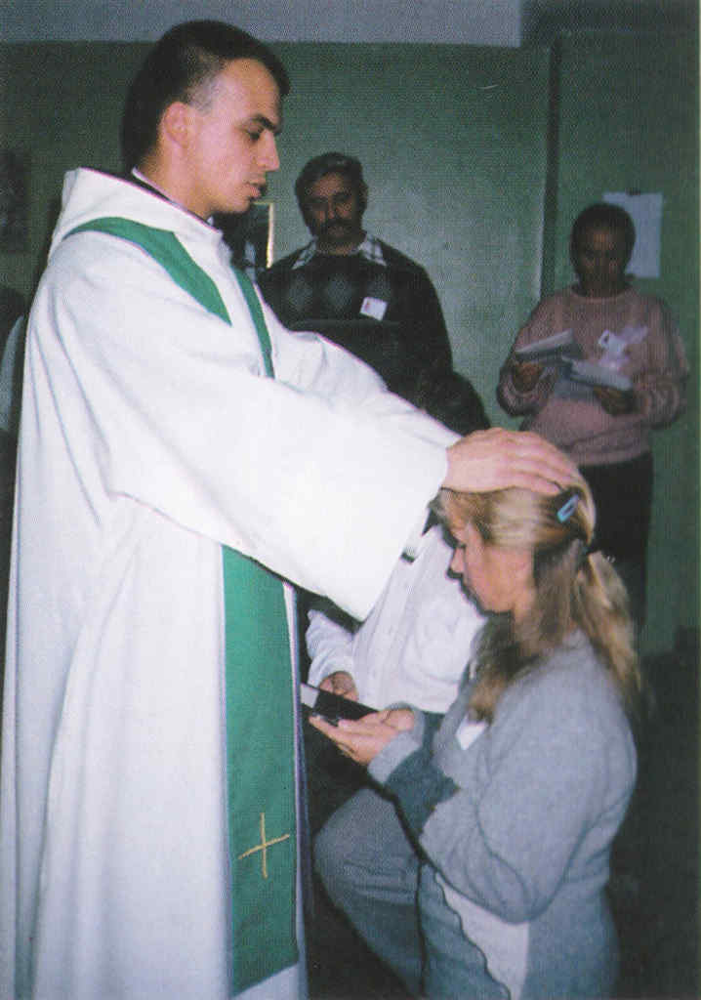
28 вересня освятили і розмістили над входом до костела образ Архангела Михаїла. (Копію образу з православної ікони виконала Ада Ізволінська).
4 грудня приєднався до спільноти кармелітів о. Євгеній Моравський.
У Великий Четвер 1998 року було вперше відправлено Богослужіння
Хресна Дорога
в лісі біля костелу, а ЗО травня єпископ Станіслав Широкорадюк уділив Таїнство Миропомазання ще 100 нашим парафіянам.
Хочеться розповісти про все, не залишити жодної справи поза увагою, але час минає, прийдуть нові люди - напишуть про наступні тридцять років до шістдесятиліття нашої парафії.
У парафії ж установилося життя, звичайне для віруючих тих країн, де Церква завжди діяла і розвивалася. Ми вже не дивуємося, коли до костелу приїжджають високі гості з-за кордону чи з консульств, розташованих у Києві, коли збираються всі священики київського деканату на спільну молитовну зустріч чи коли наїжджають Єпископи дієцезій України на якусь урочистість до нас. А наші парафіяни їдуть до Польщі чи деінде, йдуть прочани до святині Матері Божої Бердичівської. Так живе й розвивається наша парафіяльна спільнота, долаючи перешкоди, простуючи тернистим шляхом до святості.
Християнська Церква і, зокрема, Римсько-Католицька Церква, головною цінністю якої є людина, має провадити своє служіння відносно неї в дусі Євангелія, щоб вести людину дорогою спасіння і відновити її життя в дусі Пасхальнім. Там, де живе й розвивається християнська спільнота, де проголошується Слово Доброї Новини, життя з Богом потребує грунтовного формування людини й втілення Божого Слова в конкретні життєві ситуації так, аби створювався християнський спосіб життя і християнська культура, що в свою чергу гарантує тривання і розвиток Божого Духу посеред дітей Божих.
Церква є динамічною і водночас традиційною спільнотою, яка постійно розвивається та приймає все нових і нових членів, нові покоління, котрі особисто мають пройти всі етапи християнського формування й жити згідно зі своїм покликанням, випромінюючи світло віри, надії і любові являти Христа.
Саме тому парафіяльна спільнота у житті та діяльності прагне бути відкритою на прийняття нових членів, готовою як до зміцнення доброго, що вже надбано, до розвитку тих форм душпастирської праці, котрі вже існують, так і до сприйняття нового, прагне бути чутливою до знаків епохи.
Церква є таїною, до якої звертаються і суспільство, і особистості зі своїми як традиційними, так і новими, невідомими досі, вимогами, питаннями, проблемами, котрі потребують конкретного вирішення в дусі світла Євангелія.
Відгукуючись на потреби суспільства загалом і кожної людини зокрема, Церква, користуючись вічними християнськими істинами, прагне давати такі виважені відповіді й розв'язання назрілих проблем, які б слугували добрим прикладом життя в конкретних умовах певної епохи.
Церква намагається вдосконалювати людину-християнина, виводити її на новий шлях. Триває постійний процес духовного удосконалення людей, зібраних біля вівтаря, процес очищення, оновлення, зростання в дусі правдивої любові. Члени її, вдосконалюючись, створюють християнську культуру - плоди тієї таїни, якою є Церква. Вона є живою у тому разі, коли застосовуючи Слово у повсякденному житті, провадить до святості всіх своїх членів.
Господь прагне діяти явно посеред нас таким чином, аби кожний міг приєднатися до справи Спасіння.
Церква, для якої людина є найбільшою цінністю, має своє, особисто їй належне місце, вирішуючи всі свої справи у спілкуванні з Богом через Ісуса Христа в Святому Духові, вона є перспективою, майбутнім парафіяльної спільноти, шляхом до святості всіх її членів.
Хай Господь допоможе нам на такому шляху!